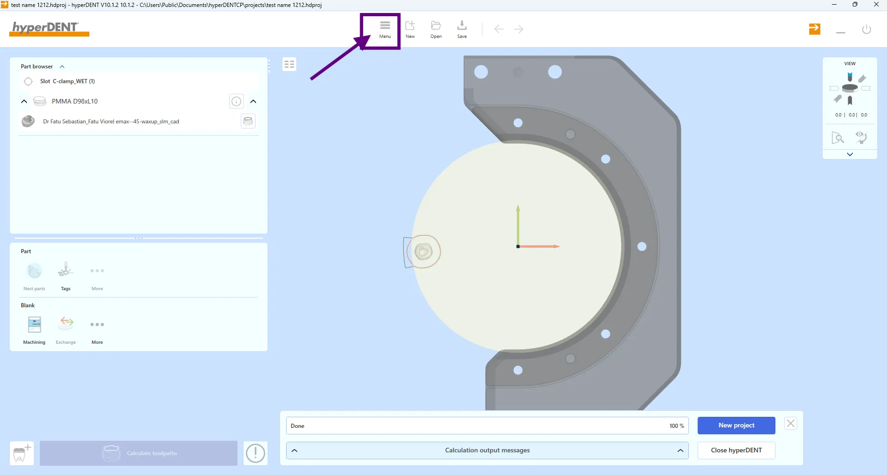
01
Menu 버튼을 누릅니다
우선 사진에 표시된 Menu 버튼을 눌러주세요.
hyperDENT · FAQ
가공 결과 문제 또는 에러 발생 시 원인 파악을 위해 projectz와 hvz 파일을 추출하는 방법입니다.
가공 결과 상에 문제가 있거나, 에러 발생 시 원인파악을 위해 projectz 과 hvz 파일을 요구할 때가 있습니다.
해당 파일 형식으로 추출하는 법에 대해 알아보겠습니다.
💡 사진을 클릭하면 확대됩니다.

우선 사진에 표시된 Menu 버튼을 눌러주세요.
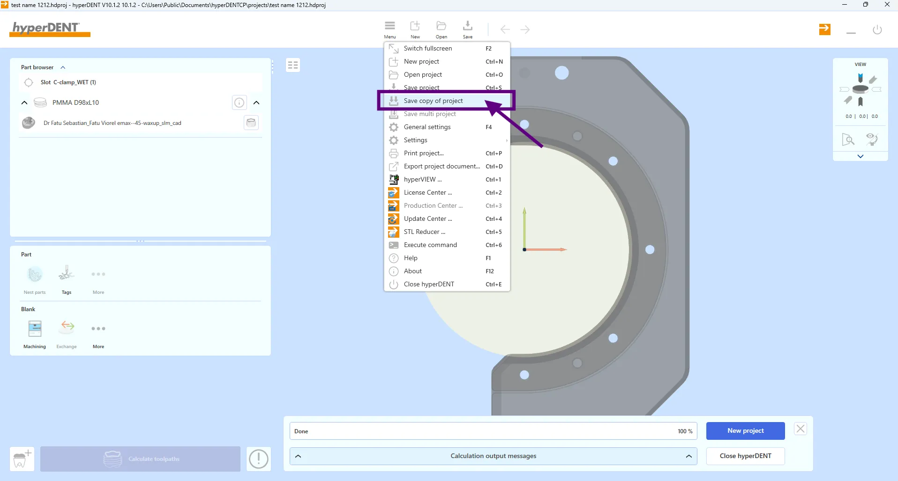
선택 가능한 항목들이 뜨는데 이때 복사본으로 저장(save copy of project) 항목을 눌러주세요.
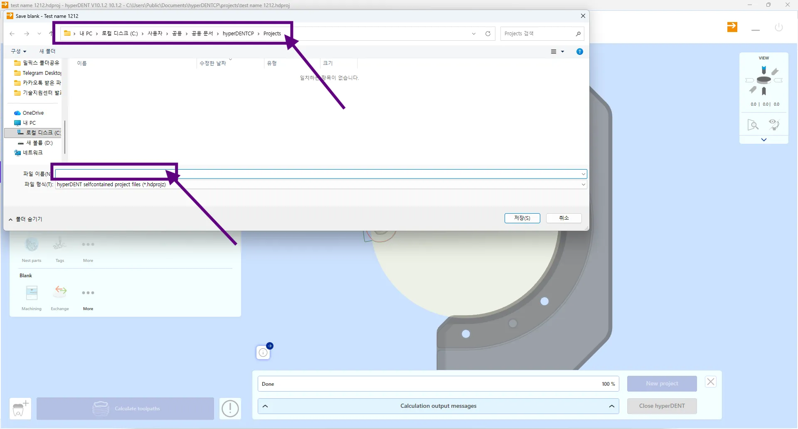
누르면 저장할 위치와 이름을 정할 수 있는 창이 팝업됩니다.
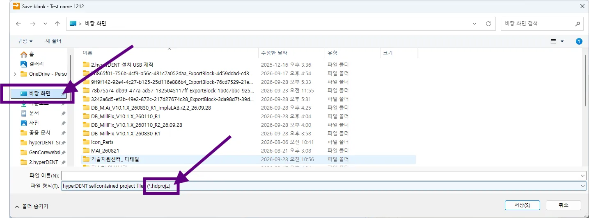
위치와 이름은 편의에 맞게 하시면 됩니다만 편의를 위해 바탕화면에 하시는 걸 권장드립니다.
이때 파일 형식이 projectz 인지 확인해주세요.(.hdprojz 형식)
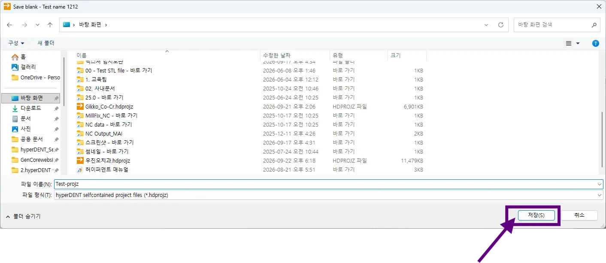
이름 설정 후 저장(S)을 클릭하면 완성입니다. (Test-projz)
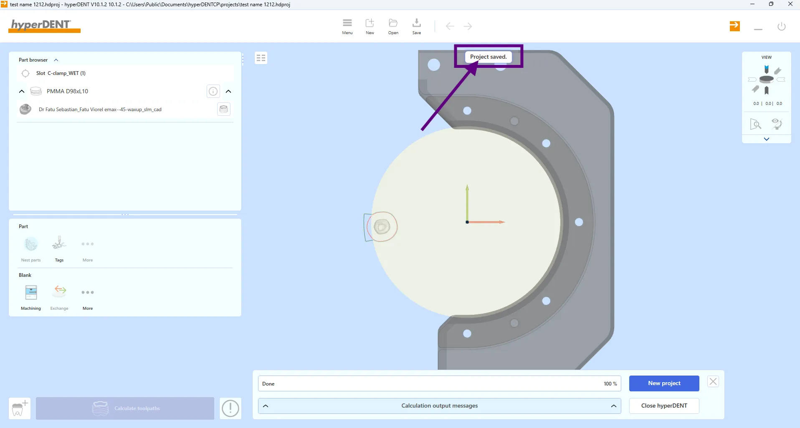
해당 문구가 뜨는지 확인해주세요.
Project saved.
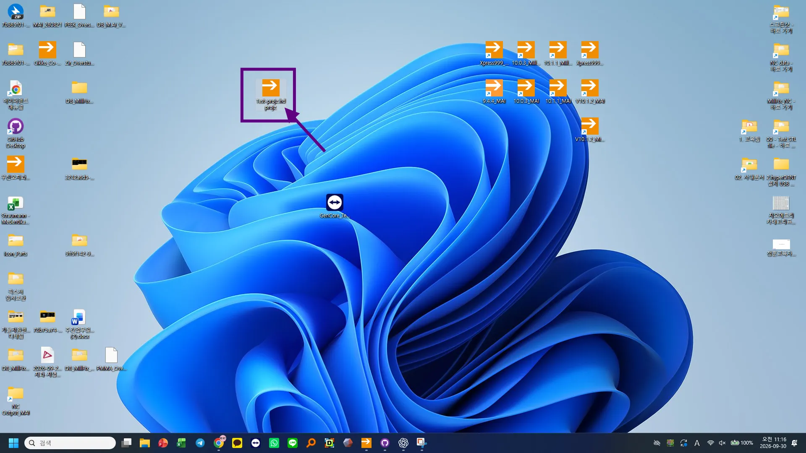
지정한 위치에 저장된 .hdprojz 파일을 확인해주시고, 해당 파일을 GenCore C/S 팀에게 전달해주세요.
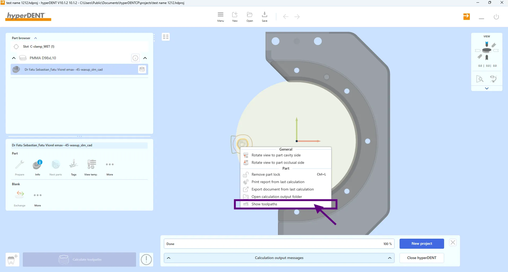
이제 hvz 형식으로 저장하는 법을 알아보겠습니다. 우선 계산이 끝난 보철물을 선택해 우클릭해주세요. 메뉴창이 활성화 되면 공구 경로 보기(show toolpaths)를 선택해주세요.
🎱 여러 STL을 한번에 계산한 경우라면, 그 중 한개만 선택하셔서 진행바랍니다.
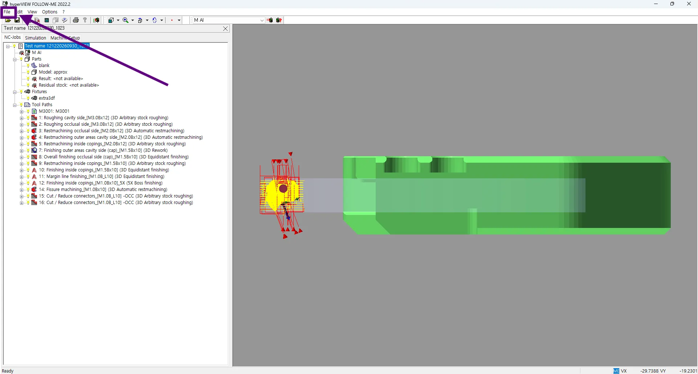
공구 경로를 확인하면 hyperVIEW가 팝업 됩니다. 여기서 공구 경로를 확인하실 수 있습니다. 좌측 상단의 File 메뉴를 클릭하세요.
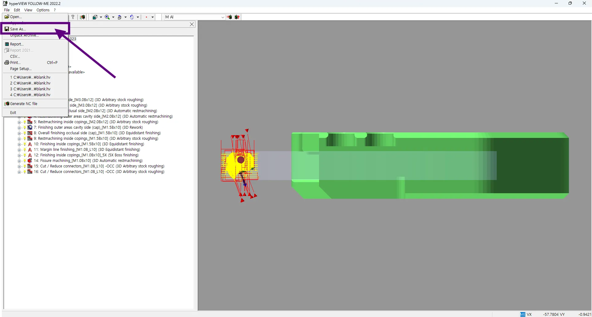
클릭 후 Save As를 선택하세요.
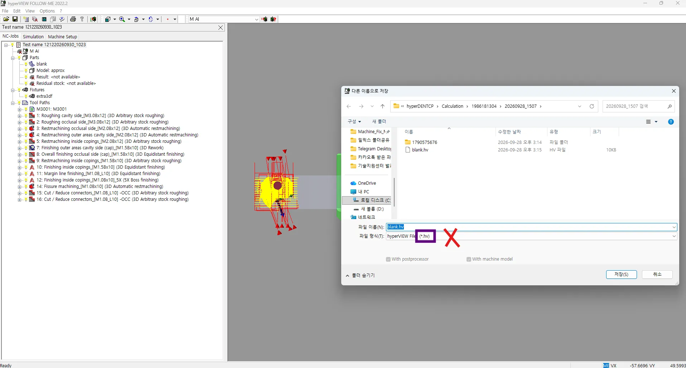
다른 이름으로 저장 창이 팝업됩니다. 여기서 바로 저장을 누르시면 안 됩니다. 지금은 hvz형식이 아닌 hv 형식입니다.
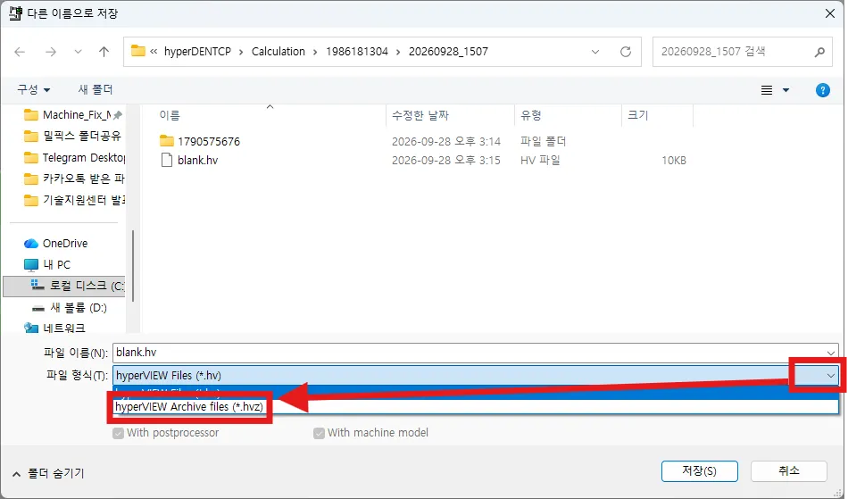
파일 형식(T) 창을 누른 후 hyperVIEW Archive files(*.hvz)를 클릭하세요.
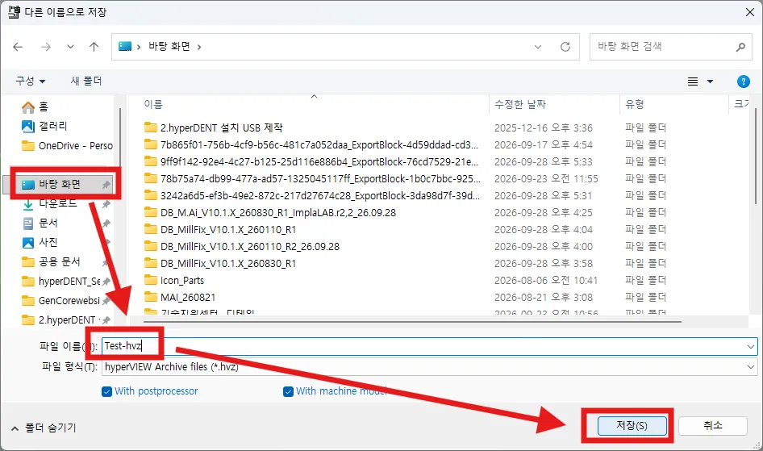
저장할 위치와 (편의상 바탕화면으로 설정했습니다. 원하시는 다른 위치를 정하셔도 상관 없습니다.) 이름을 지정하신 뒤 저장(S) 버튼을 클릭하세요.
바탕화면에 .hvz 형식으로 잘 저장됐습니다. 이제 해당 파일을 projectz 파일과 함께 GenCore C/S 팀에게 전달해주시면 됩니다.